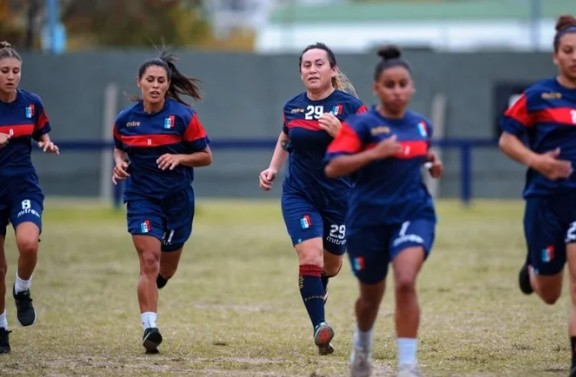

Los artículos científicos demoran más en publicarse cuando son escritos por mujeres
Ellas esperan un promedio de entre 350 y 750 días más que sus contrapartes masculinas, según un estudio basado en millones de papers.
Leer másInicio » Noticias
Ellas esperan un promedio de entre 350 y 750 días más que sus contrapartes masculinas, según un estudio basado en millones de papers.
Leer más
Aunque compiten como profesionales, en muchos casos sus ingresos no alcanzan para cubrir sus gastos básicos.
Leer másSolo una mujer habló entre decenas de líderes mundiales, evidenciando la baja representación femenina en espacios de poder.
Leer másLa industria audiovisual sigue mostrando una fuerte desigualdad de género en roles de dirección.
Leer más